Where do you need support?
Tap a part of the body to jump ahead, or keep scrolling to meet each one.
Support, fitted to your body and your life.
Bracing, prosthetic limbs, breast prostheses, compression garments, diabetic footwear and mobility aids. All medical aids covered.
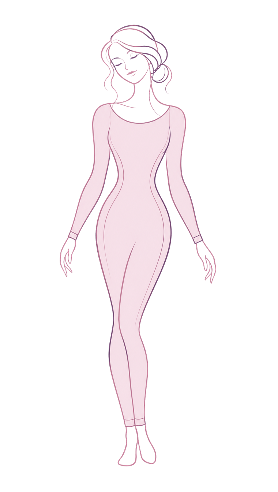
Tap a part of the body to jump ahead, or keep scrolling to meet each one.
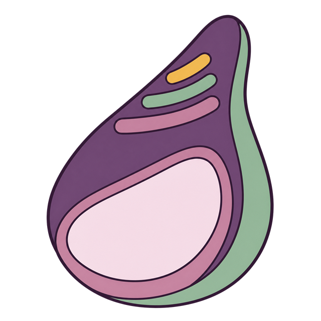
A soft silicone form worn inside a pocketed bra to restore shape and balance after a mastectomy.
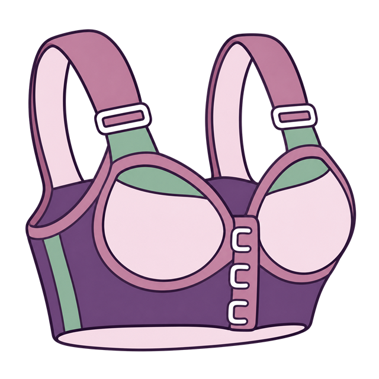
A bra with pocketed cups and wide straps, made to hold a breast form securely and comfortably.
Advice and videos for this area are on the way. Follow @yumnacpo for updates.
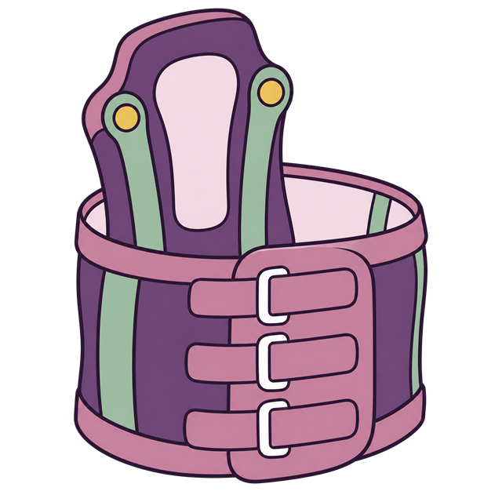
A wraparound brace with a firm back panel that supports the lower spine after surgery or injury.
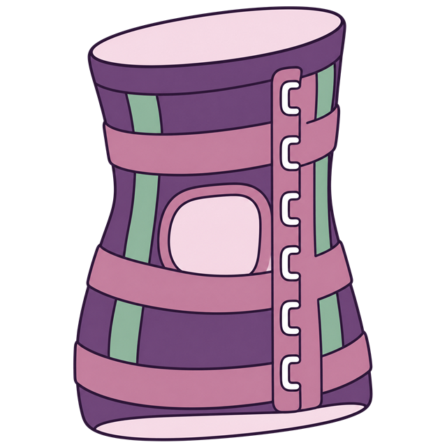
A high-waisted garment that applies even pressure after cosmetic or abdominal surgery.
Advice and videos for this area are on the way. Follow @yumnacpo for updates.
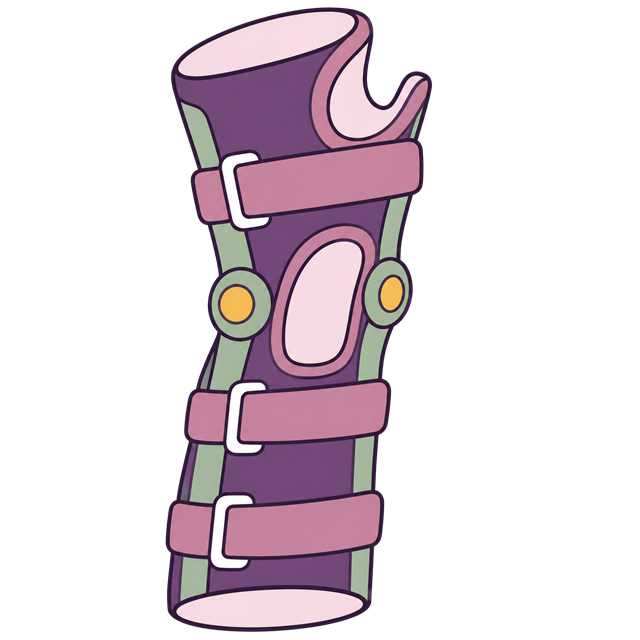
A strapped support that holds the wrist and forearm still while a fracture mends.
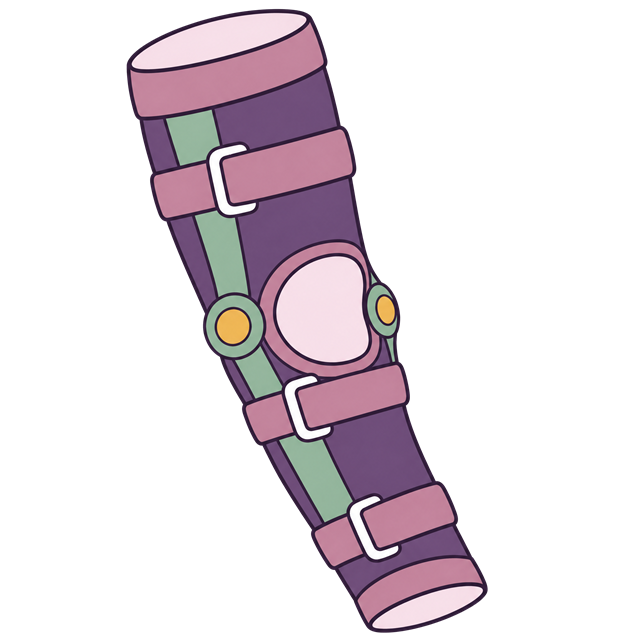
A graduated-pressure sleeve worn along the arm to help manage swelling.
Advice and videos for this area are on the way. Follow @yumnacpo for updates.
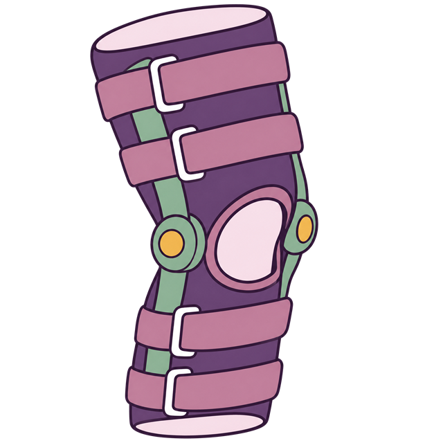
A brace with side hinges that steadies the knee after a sprain or ligament injury.
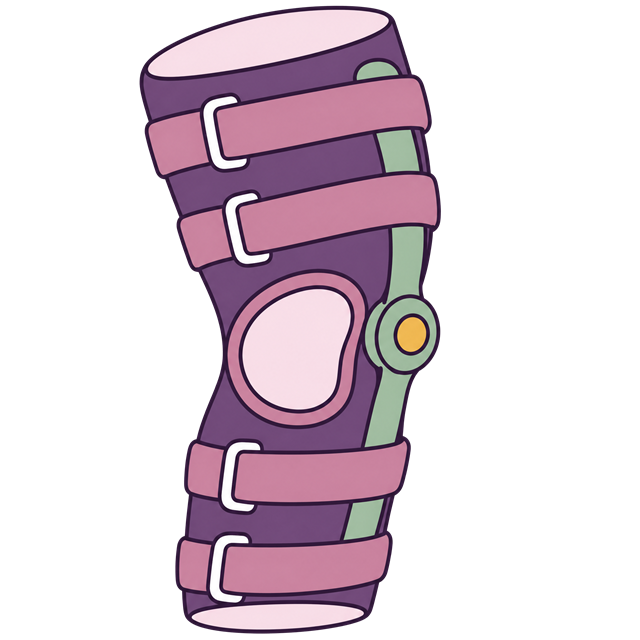
An unloader brace that shifts pressure away from the worn side of the knee joint.
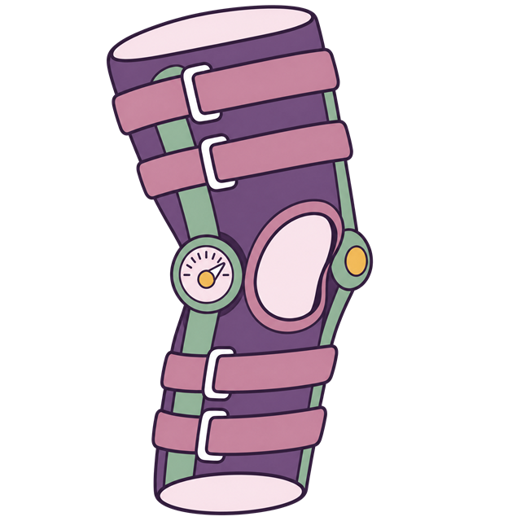
A brace with an adjustable dial that limits how far the knee bends while it recovers from surgery.
Advice and videos for this area are on the way. Follow @yumnacpo for updates.
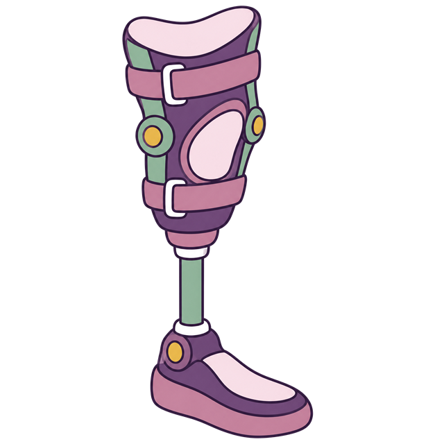
A custom socket, pylon and foot, built and fitted to replace the lower leg.
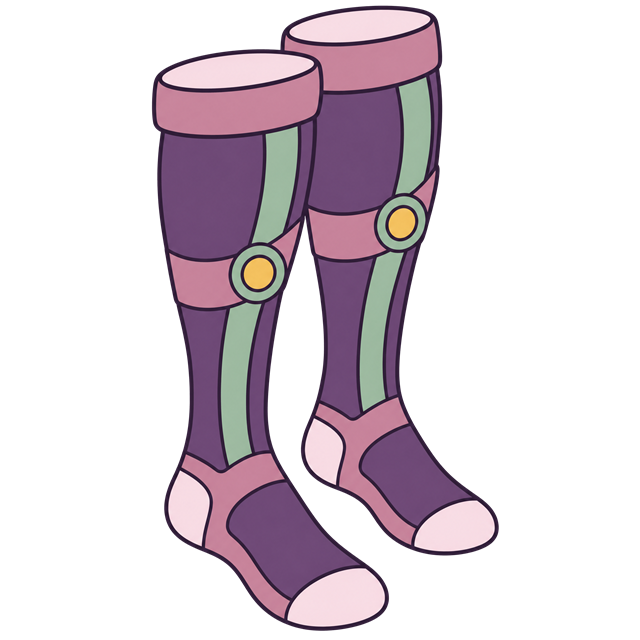
Knee-high medical stockings that apply graduated pressure to the lower legs.
Advice and videos for this area are on the way. Follow @yumnacpo for updates.
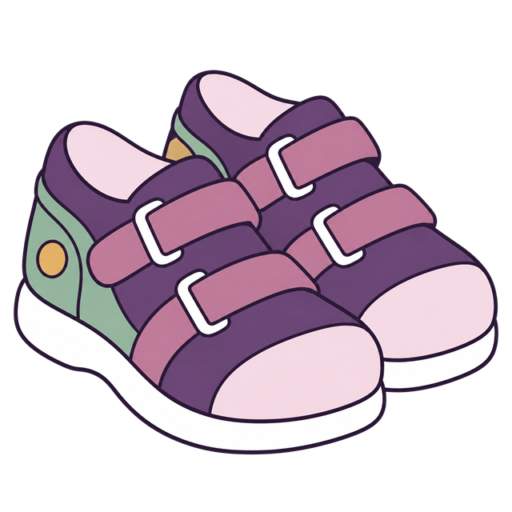
Shoes with a wide, deep toe box and soft uppers that protect sensitive feet.
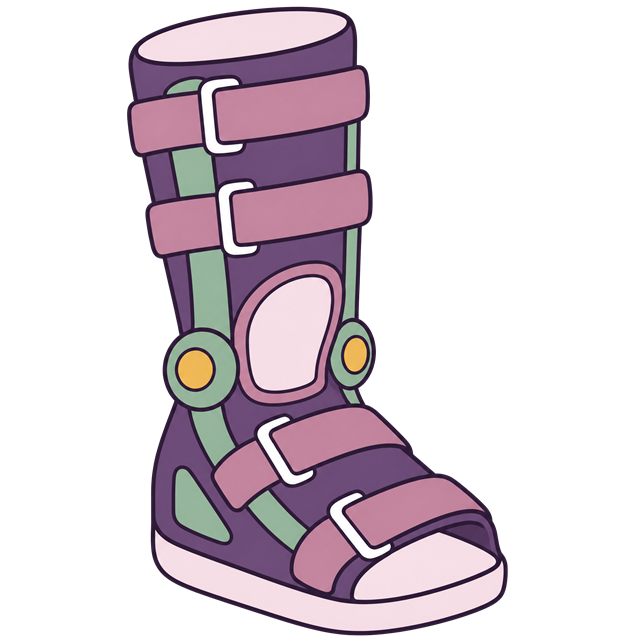
A rigid, strapped boot that protects the foot and ankle after a fracture.
Advice and videos for this area are on the way. Follow @yumnacpo for updates.
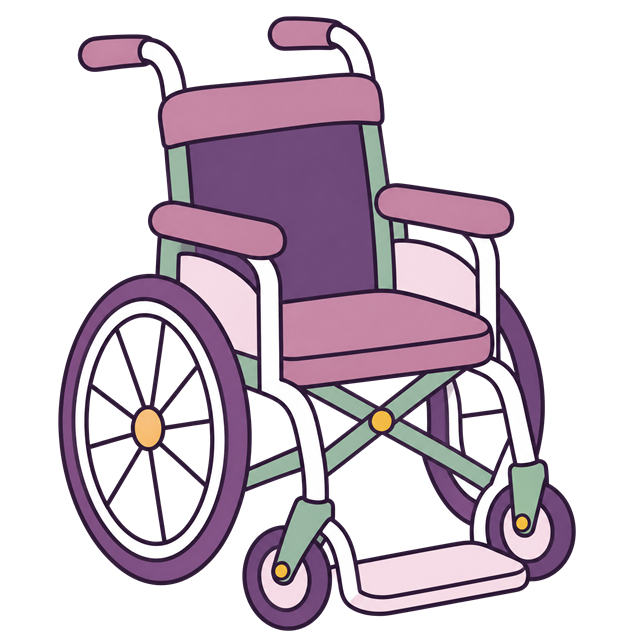
A lightweight manual wheelchair, chosen and adjusted to fit you.
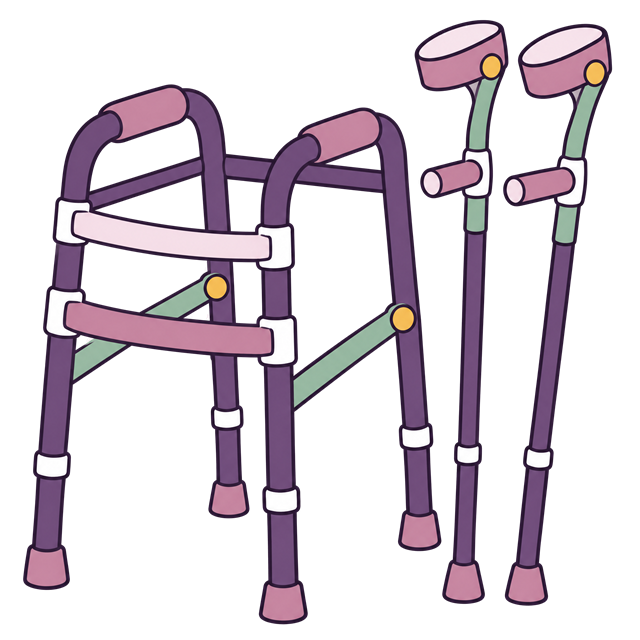
A folding frame and elbow crutches for steadier walking.
Advice and videos for this area are on the way. Follow @yumnacpo for updates.
Stories and outcomes from Yumna's patients will be shared here soon, with their permission.
Have you been fitted by Yumna? She would love to hear how you are getting on.
Share your storyYumna Patel Tyer is an orthotist and prosthetist. She measures, makes and fits supports for people recovering from surgery, living with injury or limb loss, or managing a long-term condition.
To be added.
To be added.
All medical aids covered.